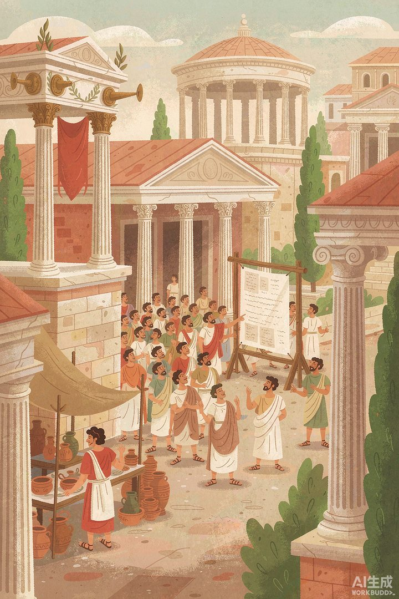
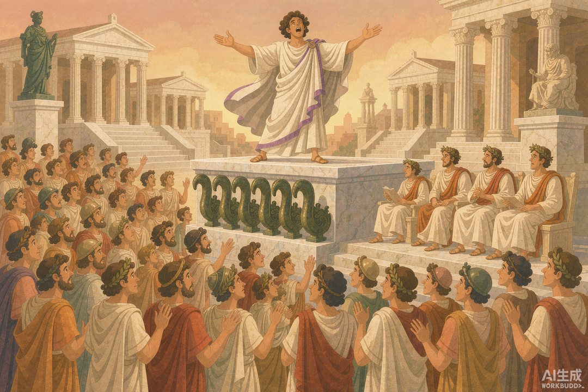
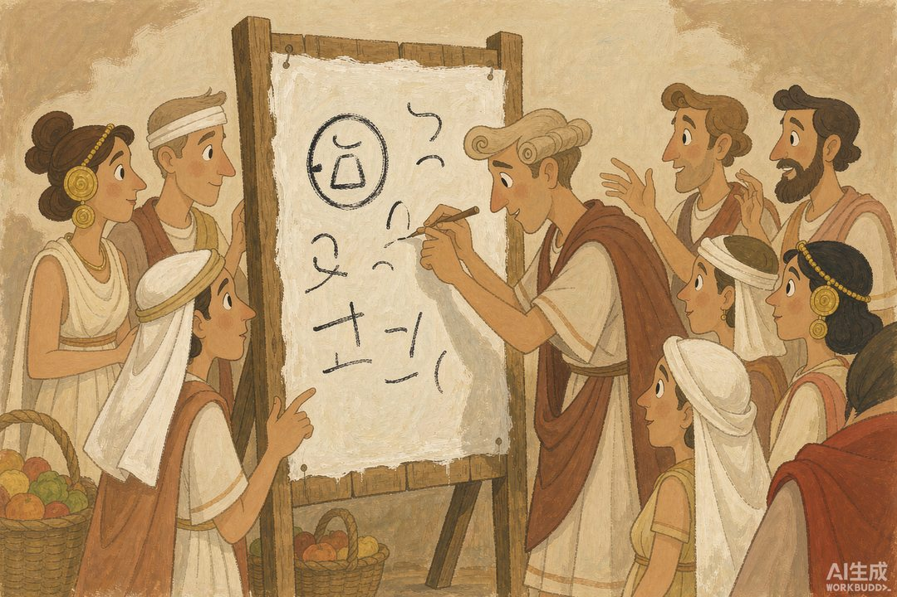

|
信息传播那些事儿 · 卷一 信息的黎明 · 第 15 篇 |
|
罗马广场喊话：广场就是电视台 —— 不修驿道不养信使，消息摊开了给全城人看 |

▲ 罗马广场：市民围着白色公告板读"今日新闻"，左侧是演说台（AI 生成示意图）
|
波斯的御道再快，消息也是国王的独享品。希腊人和罗马人偏要反着来：不加密、不专线，把信息摆在城中心的广场上，让每一个路过的人自己看、自己听、自己吵。这一篇看古代世界最热闹的"媒体终端"——广场，以及世界上第一份官方日报。 |
上一站的波斯御道，走的是"顶层专线"路线：信息又快又稳，但只服务国王一个人。地中海北岸的希腊人和罗马人，选择了另一条技术路线——不追求送得多快，追求同时让多少人知道。他们的解决方案说出来平平无奇：一块场地。
在希腊，它是每个城邦都有的阿哥拉（广场）；在罗马，它是罗马广场。市场摆在这里，法庭开在这里，庙宇立在这里，选举、审判、演讲、吵架也全在这里。用今天的话说：广场就是古代的"终端"，政治、商业、新闻、娱乐全部在同一个 App 里运行——而且日活惊人，因为那会儿家家户户没地方去，广场就是全城人的客厅。
一 | 一块讲台，用敌人的船头命名 |
罗马广场的西北角，有一座石砌讲台。它的名字来路相当彪悍：公元前 338 年，罗马在安提乌姆海战中击败拉丁邻居，执政官梅尼乌斯下令把缴获敌舰的青铜舰首撞角锯下来——一共六根——装在了广场的演说台上。从此这座讲台就叫"罗斯特拉"（Rostra），拉丁语"船喙"的意思。
这个命名是赤裸裸的政治行为艺术：每一位站上讲台的演说家，身后都立着敌人的战利品。你讨论的是税收和法律，听众看见的是罗马的武力。用今天的话说，这讲台自带"官方认证背景板"，站在上面说话，可信度先加十分。
后来帝国重建，讲台基座扩到五米高、近三十米宽，能同时面向元老院和广场人群双向演讲。两三百年间，罗马的命运就是从这块台上被说出来的。

▲ 罗斯特拉讲台：演说家张开双臂，台下人山人海（AI 生成示意图）
二 | 演讲，就是那个时代的直播 |
在广场这个"媒体终端"上，第一种信息形态是实时直播——演讲。罗马精英的必修课不是数理化，是修辞学：站在台上，一口气把几千人讲得热血沸腾，选票、法案、战争拨款当场就定。老加图在台上有个名场面：不管今天议题是什么，收尾必喊一句"另外，我认为迦太基必须毁灭！"——喊了几十年，直到迦太基真被灭了。这大概是历史上最执着的"置顶刷屏"。
最会讲的人叫西塞罗，靠一张嘴从外省新人干到执政官，他的演说稿至今还是拉丁文课本。但广场这套系统的另一面也残酷得很：公元前 43 年，西塞罗被政敌处死，头颅和双手被钉回他讲了半辈子话的罗斯特拉讲台上示众。广场能让你一夜之间说服全城，也能让你一夜之间死在全城眼前。
这就是公共空间的第一定律：声量即权力。谁能在广场上被听见，谁就握住了罗马。凯撒深谙此道，不过他不满足于只靠嗓门——他决定给广场加上第二件武器：文字。
三 | 世界上第一份"官方日报" |
公元前 59 年，恺撒当上执政官。当时元老院被豪门贵族把持，议事内容是机密——贵族派和民主派斗得你死我活。恺撒的打法简单粗暴：下令"今后元老院的工作报告，务须每日公布。"
于是在议事厅外，立起了一块涂着石膏的白色大木板，名字就叫"阿尔布"（Album，白色的意思），尖笔每天往上写：元老院议了什么、通过了什么法案、打了什么仗、法院判了什么案、税收几何——后来甚至扩到市民的出生、婚嫁和讣告。这就是《每日纪闻》（Acta Diurna），公认的世界官方公报之祖，一份同时具备"政府公报"和"大众新闻"双属性的日报——搁今天，等于官方通稿和同城新闻共用一个版面。
更绝的是发行环节：恺撒派专人把内容抄在布匹上，快马送到各行省首府，翻译成当地语言再张贴公布。中央编辑部 + 地方印刷点 + 多语言分发——这套结构，罗马人在两千年前的广场上就搭好了。恺撒遇刺后，接班人屋大维在公元前 6 年恢复并继续经营这份公报，直到公元 330 年帝国迁都君士坦丁堡才停——断断续续，办了约 390 年。可惜的是，石膏木板经不住岁月，至今没有一片实物存世。
顺带一提东方：同时期的汉朝，各郡设在首都的"邸"里也有专人抄录朝政文书，经驿站发往各地太守——这就是"邸报"。罗马的《每日纪闻》面向广场大众，汉朝的邸报面向官僚系统，同一个时代，东西方各自发明了"官方信息定期发布"，只是服务的读者截然不同。

▲ 抄写员在石膏白板上更新今日要闻，市民围观议论（AI 生成示意图）
四 | 广场三件套：直播、存档、评论区 |
现在把广场的玩法拆开看，你会发现它齐活得吓人：演讲是实时直播流，白板公告是可回看的存档，人群里的七嘴八舌是评论区——散场后流进酒馆和街巷的议论，就是二次传播。波斯御道解决的是"从一个点到另一个点"，广场解决的是"从一个点到所有人"；一个做专线，一个做广播。两边合起来，古代世界的信息传播就凑齐了两大基本形态。
而且广场这套系统有个邮件和驿马永远比不了的地方：它天生公开。元老院把议事记录锁在密室里，恺撒把一块白板立在太阳底下，信息垄断就被砸开了一道缝。广播面越宽，掌权者越没法只让"自己人"知道——这是广场给后世留下的最值钱的遗产。
不过请注意，广场传播有个死穴：它记不住。演讲散了就散了，白板每天刷掉重写，声音在空气里活不过一秒。一个文明光靠广场活着，等于光靠直播活着——想穿越几百年把东西完整交给后人，得换一种狠办法：不写下来，往脑子里刻。下一站，去看一个把"背诵"练成国家工程的民族，怎么用纯人脑传了两千年文件。
|
数字锚点 · 罗马广场喊话 | |||||||||||||||
| |||||||||||||||
|
🔔 下篇预告 · 第 16 篇《犹太口传律法》——明明有了文字，偏不写下来，几十万字的律法和注释全靠脑子背，一代代口口相传。这个"偏不写"的执念，反而练出了人类历史上最恐怖的记忆组织。他们是怎么做到一字不错的？ |
史料转引：李维《罗马史》关于罗斯特拉讲台得名（前 338 年安提乌姆海战）的记载；恺撒创办《每日纪闻》（Acta Diurna）及屋大维恢复刊布的通行史学叙述；老普林尼等关于广场演说的古典记载；中国"邸报"制度通行研究。配图为 AI 生成示意图。